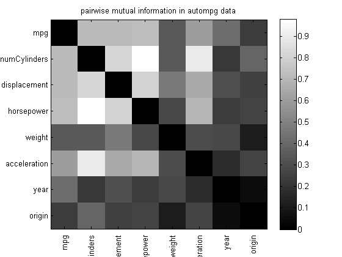

Compute pairwise mutual information in autompg dataset
%loadData('adultCensus'); % make sure data is on path %[data] = adultDataPreprocess; data = loadData('autompg'); [N,D] = size(data.X); cndx = (data.types == 'c'); XC = data.X(:, cndx); XD = data.X(:, ~cndx); mi = mutualInfoAllPairsMixed(XD, XC); figure; imagesc(mi); colormap(gray); colorbar xticklabelRot(data.varNames) set(gca,'yticklabel', data.varNames); title('pairwise mutual information in autompg data') printPmtkFigure('miMixedDemo')